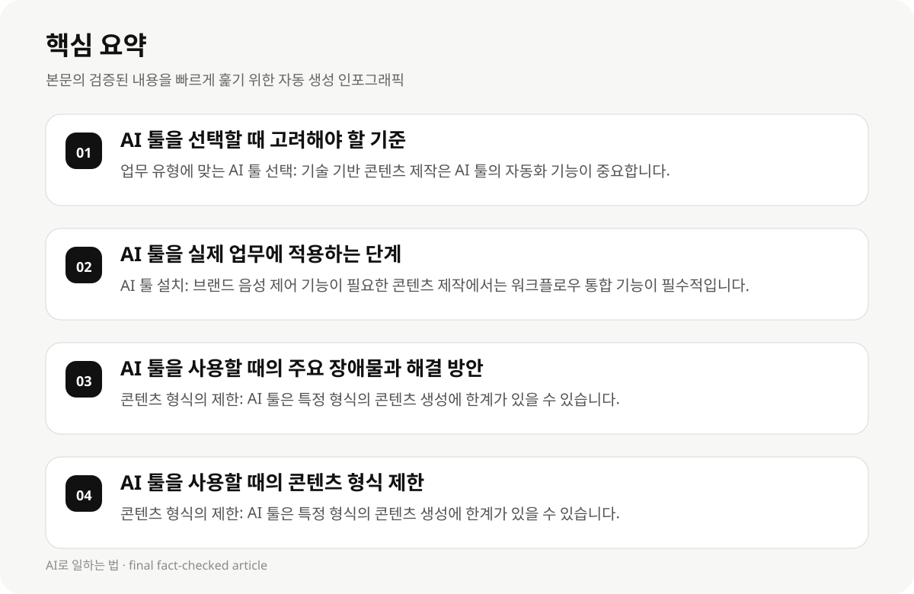

AI 툴을 선택할 때 고려해야 할 기준 #
콘텐츠 제작자들이 AI 툴을 선택할 때는 주요 기준으로는 업무 유형, 콘텐츠 형식, 비용, 사용성, 브랜드 음성 제어 및 워크플로우 통합이 있습니다. 예를 들어, 기술 기반 콘텐츠 제작은 AI 툴의 기능이 복잡할 수 있으므로, 간단한 사용성이 중요한 요소입니다.
AI 툴은 다양한 콘텐츠 형식을 생성할 수 있으나, 업무 유형에 따라 가격과 인터페이스가 달라질 수 있습니다. 예를 들어, 브랜드 음성 제어가 필요한 콘텐츠 제작은 AI 툴의 워크플로우 통합 기능이 필수적입니다.
AI 툴의 사용성은 콘텐츠 제작자의 기술 수준과 업무 유형에 따라 달라질 수 있습니다. 기술 기반 콘텐츠 제작은 AI 툴의 자동화 기능이 중요하며, 시간 절감이 핵심입니다.
- 업무 유형에 맞는 AI 툴 선택: 기술 기반 콘텐츠 제작은 AI 툴의 자동화 기능이 중요합니다.
- 콘텐츠 형식에 맞는 AI 툴 선택: 브랜드 음성 제어가 필요한 콘텐츠 제작은 AI 툴의 워크플로우 통합 기능이 필수적입니다.
- 비용과 사용성 고려: AI 툴의 가격은 콘텐츠 형식에 따라 달라질 수 있습니다.
- 업무 효율성 향상: AI 툴은 콘텐츠 제작자의 워크플로우를 자동화하여 시간과 비용을 절감합니다.
AI 툴을 실제 업무에 적용하는 단계 #
AI 툴을 실제 업무에 적용하기 위해서는 설치 → 설정 → 실행 → 관리 단계를 따라야 합니다. 예를 들어, AI 툴을 설치하면 워크플로우 통합 기능을 활성화하고, 콘텐츠 형식에 맞는 자동화 기능을 설정해야 합니다.
AI 툴의 설치는 브랜드 음성 제어 기능이 필요한 콘텐츠 제작에서는 워크플로우 통합이 필수적입니다. 설정 단계에서는 콘텐츠 형식, 업무 유형, 사용성에 맞는 기능을 선택해야 합니다.
AI 툴의 실행 단계에서는 자동화 기능의 시간 절감 효과가 가장 큰 영향을 미칩니다. 예를 들어, AI 툴의 자동화 기능은 콘텐츠 제작자의 시간 절감을 크게 향상시킵니다.
AI 툴의 관리 단계에서는 비용 절감과 업무 효율성 향상을 위해 AI 툴의 자동화 기능과 워크플로우 통합 기능을 지속적으로 관리해야 합니다.
- AI 툴 설치: 브랜드 음성 제어 기능이 필요한 콘텐츠 제작에서는 워크플로우 통합 기능이 필수적입니다.
- AI 툴 설정: 콘텐츠 형식, 업무 유형, 사용성에 맞는 기능을 선택해야 합니다.
- AI 툴 실행: 자동화 기능의 시간 절감 효과가 가장 큰 영향을 미칩니다.
- AI 툴 관리: 자동화 기능과 워크플로우 통합 기능을 지속적으로 관리해야 합니다.
AI 툴을 사용할 때의 주요 장애물과 해결 방안 #
AI 툴을 사용할 때 가장 큰 장애물은 콘텐츠 형식의 제한입니다. 예를 들어, AI 툴은 특정 형식의 콘텐츠 생성에 한계가 있을 수 있습니다. 이는 업무 유형에 따라 달라질 수 있습니다.
AI 툴의 시간 절감 효과는 콘텐츠 제작자의 업무 효율성 향상에 큰 영향을 미칩니다. 그러나 AI 툴의 자동화 기능은 시간 절감이 가장 큰 영향을 미칩니다.
AI 툴의 비용는 콘텐츠 형식에 따라 달라질 수 있으므로, 비용 절감을 위해 AI 툴의 자동화 기능과 워크플로우 통합 기능을 고려해야 합니다.
- 콘텐츠 형식의 제한: AI 툴은 특정 형식의 콘텐츠 생성에 한계가 있을 수 있습니다.
- 시간 절감 효과: AI 툴의 자동화 기능은 콘텐츠 제작자의 시간 절감을 크게 향상시킵니다.
- 비용 절감: AI 툴의 자동화 기능과 워크플로우 통합 기능은 비용 절감에 도움을 줄 수 있습니다.

AI 툴을 사용할 때의 콘텐츠 형식 제한 #
AI 툴은 다양한 콘텐츠 형식을 생성할 수 있지만, 업무 유형에 따라 콘텐츠 형식의 제한이 있을 수 있습니다. 예를 들어, 브랜드 음성 제어가 필요한 콘텐츠 제작에서는 AI 툴의 워크플로우 통합 기능이 필수적입니다.
AI 툴의 자동화 기능은 콘텐츠 형식에 따라 시간 절감 효과가 달라질 수 있습니다. 예를 들어, AI 툴의 자동화 기능은 단순한 콘텐츠 형식에 가장 효과적입니다.
AI 툴의 워크플로우 통합 기능은 콘텐츠 형식에 따라 비용과 시간이 달라질 수 있습니다. 이는 업무 유형에 따라 비용 절감을 위한 선택이 필요합니다.
- 콘텐츠 형식의 제한: AI 툴은 특정 형식의 콘텐츠 생성에 한계가 있을 수 있습니다.
- 자동화 기능의 시간 절감 효과: 단순한 콘텐츠 형식에 가장 효과적입니다.
- 워크플로우 통합 기능의 비용과 시간: 업무 유형에 따라 비용 절감이 필요합니다.
AI 툴을 사용할 때의 콘텐츠 제작자의 효율성 향상 #
AI 툴은 콘텐츠 제작자의 업무 효율성 향상에 기여합니다. 예를 들어, AI 툴의 자동화 기능은 콘텐츠 제작자의 시간 절감을 크게 향상시킵니다.
AI 툴의 자동화 기능은 콘텐츠 제작자의 업무 효율성 향상에 큰 영향을 미칩니다. 이는 시간 절감과 비용 절감을 통해 성과 향상을 가능하게 합니다.
AI 툴의 워크플로우 통합 기능은 콘텐츠 제작자의 업무 효율성 향상에 도움을 줄 수 있습니다. 이는 시간 절감과 비용 절감을 통해 성과 향상을 가능하게 합니다.
- 자동화 기능의 시간 절감 효과: 콘텐츠 제작자의 시간 절감을 크게 향상시킵니다.
- 워크플로우 통합 기능의 비용 절감: 콘텐츠 제작자의 비용 절감을 가능하게 합니다.
- 업무 효율성 향상: 시간 절감과 비용 절감을 통해 성과 향상이 가능합니다.
AI 툴을 사용할 때의 콘텐츠 제작자의 시간 절감 #
AI 툴은 콘텐츠 제작자의 시간 절감에 큰 영향을 미칩니다. 예를 들어, AI 툴의 자동화 기능은 콘텐츠 제작자의 시간 절감을 크게 향상시킵니다.
AI 툴의 자동화 기능은 콘텐츠 제작자의 시간 절감을 크게 향상시킵니다. 이는 업무 효율성 향상과 비용 절감을 통해 성과 향상을 가능하게 합니다.
AI 툴의 워크플로우 통합 기능은 콘텐츠 제작자의 시간 절감을 크게 향상시킵니다. 이는 업무 효율성 향상과 비용 절감을 통해 성과 향상을 가능하게 합니다.
- 자동화 기능의 시간 절감 효과: 콘텐츠 제작자의 시간 절감을 크게 향상시킵니다.
- 워크플로우 통합 기능의 비용 절감: 콘텐츠 제작자의 비용 절감을 가능하게 합니다.
- 업무 효율성 향상: 시간 절감과 비용 절감을 통해 성과 향상이 가능합니다.
AI 툴을 사용할 때의 콘텐츠 제작자의 주요 고려 사항 #
AI 툴을 사용할 때 콘텐츠 제작자는 업무 유형, 콘텐츠 형식, 비용, 사용성, 워크플로우 통합에 주의해야 합니다. 예를 들어, 브랜드 음성 제어가 필요한 콘텐츠 제작에서는 워크플로우 통합 기능이 필수적입니다.
AI 툴의 자동화 기능은 콘텐츠 제작자의 시간 절감을 크게 향상시킵니다. 이는 업무 효율성 향상과 비용 절감을 통해 성과 향상을 가능하게 합니다.
AI 툴의 워크플로우 통합 기능은 콘텐츠 제작자의 업무 효율성 향상에 도움을 줄 수 있습니다. 이는 시간 절감과 비용 절감을 통해 성과 향상을 가능하게 합니다.
- 업무 유형에 맞는 AI 툴 선택: 브랜드 음성 제어가 필요한 콘텐츠 제작에서는 워크플로우 통합 기능이 필수적입니다.
- 콘텐츠 형식에 맞는 AI 툴 선택: 자동화 기능의 시간 절감 효과가 가장 큰 영향을 미칩니다.
- 비용 절감: AI 툴의 자동화 기능과 워크플로우 통합 기능은 비용 절감에 도움을 줄 수 있습니다.
AI 툴을 사용할 때의 콘텐츠 제작자의 주요 장애물 #
AI 툴을 사용할 때 가장 큰 장애물은 콘텐츠 형식의 제한입니다. 예를 들어, AI 툴은 특정 형식의 콘텐츠 생성에 한계가 있을 수 있습니다. 이는 업무 유형에 따라 달라질 수 있습니다.
AI 툴의 자동화 기능은 콘텐츠 제작자의 시간 절감을 크게 향상시킵니다. 그러나 업무 효율성 향상은 시간 절감과 비용 절감을 통해 가능합니다.
AI 툴의 워크플로우 통합 기능은 콘텐츠 제작자의 업무 효율성 향상에 도움을 줄 수 있습니다. 이는 시간 절감과 비용 절감을 통해 성과 향상을 가능하게 합니다.
- 콘텐츠 형식의 제한: AI 툴은 특정 형식의 콘텐츠 생성에 한계가 있을 수 있습니다.
- 자동화 기능의 시간 절감 효과: 콘텐츠 제작자의 시간 절감을 크게 향상시킵니다.
- 워크플로우 통합 기능의 비용 절감: 콘텐츠 제작자의 비용 절감을 가능하게 합니다.
AI 툴을 사용할 때의 콘텐츠 제작자의 주요 고려 사항 #
AI 툴을 사용할 때 콘텐츠 제작자는 업무 유형, 콘텐츠 형식, 비용, 사용성, 워크플로우 통합에 주의해야 합니다. 예를 들어, 브랜드 음성 제어가 필요한 콘텐츠 제작에서는 워크플로우 통합 기능이 필수적입니다.
AI 툴의 자동화 기능은 콘텐츠 제작자의 시간 절감을 크게 향상시킵니다. 이는 업무 효율성 향상과 비용 절감을 통해 성과 향상을 가능하게 합니다.
AI 툴의 워크플로우 통합 기능은 콘텐츠 제작자의 업무 효율성 향상에 도움을 줄 수 있습니다. 이는 시간 절감과 비용 절감을 통해 성과 향상을 가능하게 합니다.
- 업무 유형에 맞는 AI 툴 선택: 브랜드 음성 제어가 필요한 콘텐츠 제작에서는 워크플로우 통합 기능이 필수적입니다.
- 콘텐츠 형식에 맞는 AI 툴 선택: 자동화 기능의 시간 절감 효과가 가장 큰 영향을 미칩니다.
- 비용 절감: AI 툴의 자동화 기능과 워크플로우 통합 기능은 비용 절감에 도움을 줄 수 있습니다.